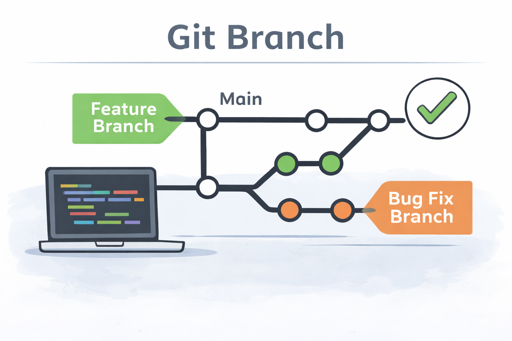

What Is the Purpose of a README File?
A well-written README helps users quickly understand the project without needing to explore the entire codebase. It also makes projects more professional and accessible to others.
This page will contain the information to complete the task.
A well-written README helps users quickly understand the project without needing to explore the entire codebase. It also makes projects more professional and accessible to others.

Wireframes act as a guide for designers, developers, and stakeholders, ensuring everyone has a shared understanding of how the final product should work.

A well-written README helps users quickly understand the project without needing to explore the entire codebase. It also makes projects more professional and accessible to others.